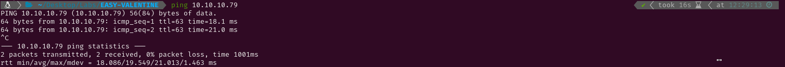

EASY-VALENTINE
1. Recon
Nmap
I started pinging the target to check if it was a Linux or a Windows system. The Time-To-Live (ttl) was 63, which is very close to 64, so it was a Linux system. Had it been close to 128 (or 128) it would have been a Windows system. After that I conducted an Nmap scan to detect active services on the target using -p- to scan all ports. Given that it was a Hack The Box machine (a controlled environment), I optimized the scan for speed using the following flags: -sS for a SYN scan, -Pn to skip the host discovery stage, and -n to skip reverse DNS resolution for higher speed.


The scan revealed the following open ports:
- SSH on port 22.
- HTTP on port 80
- HTTPS on port 443
Then, I conducted a more thorough scan on those ports using service version detection (-sV) and the Nmap Scripting Engine (NSE) with default scripts (-sC). I also saved the output for easy reference later (-oN nmap).

Website - TCP 80
After completing the scan, I visited the webpage in search of potential web vulnerabilities. However, the site only displayed an image of a woman and a bleeding heart. This was intended to indicate that the target was vulnerable to the Heartbleed vulnerability, but I had never exploited it before.


Since the site didn’t provide any useful information, I decided to run Gobuster to brute-force directory paths. I started with the common.txt wordlist to quickly identify potential directories for further investigation. While analyzing those initial results, I initiated a second Gobuster scan using the directory-list-2.3-medium.txt wordlist, knowing it would take significantly longer to complete. However, the second scan didn’t show any new results.
In the /dev directory, I discovered two files: notes.txt and hype_key. The first appeared to be notes taken by the webpage's creator, while the second contained a series of hexadecimal numbers. I used CyberChef to decode the hidden message, which turned out to be an encrypted RSA key.


2. Gaining Access
As I didn’t have a passphrase to decrypt the RSA key, I continued enumerating the services. After some time, I discovered that the SSL certificate was vulnerable to Heartbleed. This vulnerability affects the OpenSSL cryptography library and is executed through the TLS heartbeat extension. This extension allows two computers to maintain uninterrupted communication by exchanging encrypted data packets. These packets contain textual messages along with their specified lengths (for example: "potato", 6).
The issue arises when the receiver overtrusts the sender and fails to verify that the indicated length matches the actual length of the textual message. This allows attackers to send a message with an exaggerated length, prompting the receiver to respond with the original message along with additional data from its memory.

While investigating about the HeartBleed vulnerability I found an image which I found very descriptive.

To exploit this vulnerability, I found a Python script that automated the process. I executed the script using the command python2 heartbleed.py 10.10.10.79 -n 50 > heartbleed.txt, which generated a file containing the dumped memory. This file included random characters and a PHP variable called $text, with a value of aGVhcnRibGVlZGJlbGlldmV0aGVoeXBlCg==. I then used the /decode.php directory I had previously discovered with Gobuster to decode the string, revealing the plaintext message: heartbleedbelievethehype.


I suspected that this could be the passphrase for the RSA key, so I used openssl to attempt to decrypt the key.


I attempted to log in via ssh using the username hype, as the encrypted RSA key was stored in a file named hype_key. The login was successful, and I was able to retrieve the user flag.

3. Privilege Escalation
Root
After gaining access to the target, I checked for any cron jobs or sudo permissions but couldn’t find any. I also examined which binaries had the SUID bit set, but there were no common binaries available for exploitation.

While examining the bash_history file, I discovered that tmux had been used, resulting in the creation of a socket file. I noticed that the owner of the socket file was root, but it was associated with the hype group. By using the hype user, I was able to access the session with the command tmux -S dev_sess, effectively taking control of the session as its owner (root). This granted me root permissions, allowing me to retrieve the root flag.